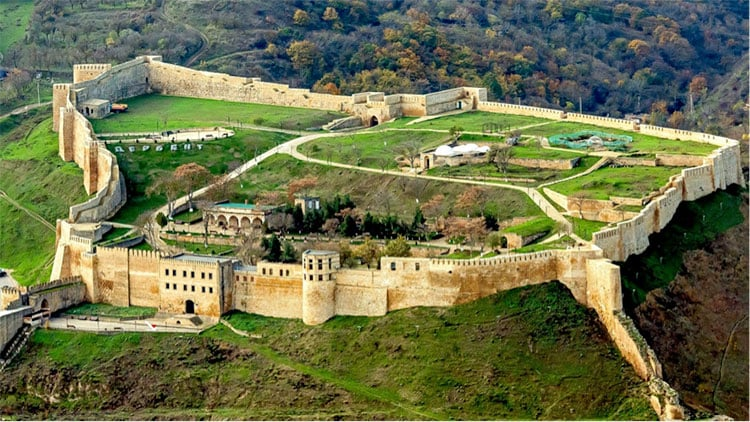

Derbent
Ciudad milenaria a orillas del Caspio, con una impresionante fortaleza y murallas UNESCO. Un tesoro histórico con calles antiguas, mezquitas y mercados que evocan épocas pasadas.
Daguestán, ubicada en el corazón del Cáucaso Norte, es una república de la Federación Rusa que deslumbra por su singularidad. Su capital, Majachkalá, es una ciudad vibrante a orillas del mar Caspio, donde la modernidad se entrelaza con las tradiciones ancestrales. Con una superficie de 50.270 km², esta tierra de montañas y valles alberga a alrededor de 3 millones de personas, creando un mosaico cultural y lingüístico fascinante. El ruso es el idioma oficial, pero las numerosas lenguas locales como el avar, lak, darguín y lezguino resuenan en cada rincón, recordando la diversidad étnica de la región. La religión mayoritaria es el Islam, pero la convivencia pacífica con minorías cristianas y judías es un testimonio de la tolerancia y respeto que caracteriza a Daguestán.
Diversidad cultural: Habitada desde la antigüedad, Daguestán es un crisol de culturas y lenguas, reflejo de su rica historia.
Islam: La llegada del Islam en el siglo VII transformó la región, fusionando elementos islámicos con tradiciones locales.
Dominación rusa: En el siglo XIX, Rusia conquistó Daguestán, modernizándola pero también generando tensiones y conflictos.
Época soviética: Bajo el régimen soviético, Daguestán se desarrolló económicamente, pero también sufrió represión.
Independencia: Tras la caída de la URSS en 1991, Daguestán se unió a Rusia, enfrentando desafíos como el terrorismo.
Actualidad: Daguestán conserva su cultura y tradiciones, y emerge como un destino turístico con un futuro prometedor.
Daguestán es un crisol de culturas y tradiciones donde la música, la danza, los trajes y la gastronomía varían de una etnia a otra, creando un mosaico cultural único en el mundo. Las danzas folclóricas, llenas de energía y pasión, cuentan historias de amor, valentía y tradiciones ancestrales. La música tradicional, con sus melodías hipnóticas y ritmos vibrantes, acompaña las festividades y celebraciones, creando un ambiente festivo y alegre. Los trajes tradicionales, con sus colores brillantes y diseños elaborados, reflejan la identidad y el orgullo de cada grupo étnico. La gastronomía, con sus sabores intensos y variados, es un reflejo de la diversidad de ingredientes y técnicas culinarias de la región.
Ciudad milenaria a orillas del Caspio, con una impresionante fortaleza y murallas UNESCO. Un tesoro histórico con calles antiguas, mezquitas y mercados que evocan épocas pasadas.
Uno de los cañones más profundos y largos del mundo, con paisajes escarpados y majestuosos que te dejarán sin aliento. El río Sulak serpentea en el fondo, añadiendo serenidad a este paisaje salvaje.
Pueblo de montaña famoso por su artesanía en plata y joyería. Los habitantes de Kubachi son maestros en el trabajo de la plata, creando piezas únicas que combinan técnicas ancestrales con diseños modernos.
Una de las cascadas más altas de Rusia, con una caída de agua impresionante que te dejará maravillado. Un lugar ideal para los amantes de la naturaleza y la fotografía.
Lugar histórico donde se libraron batallas durante la guerra del Cáucaso en el siglo XIX. Ofrece vistas panorámicas de las montañas y cuenta con monumentos y memoriales que conmemoran estos eventos históricos.
El lago más grande y profundo del Cáucaso Norte, con aguas cristalinas y paisajes montañosos. Un lugar perfecto para nadar, pescar y disfrutar de la tranquilidad de la naturaleza.